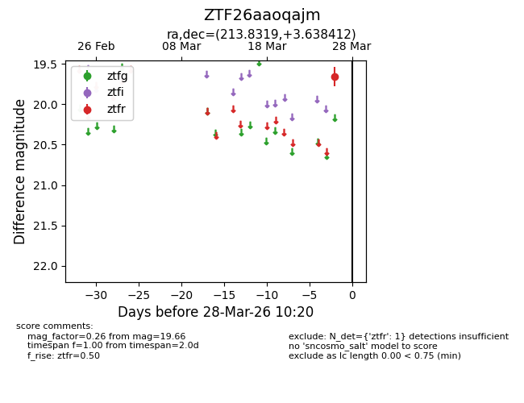
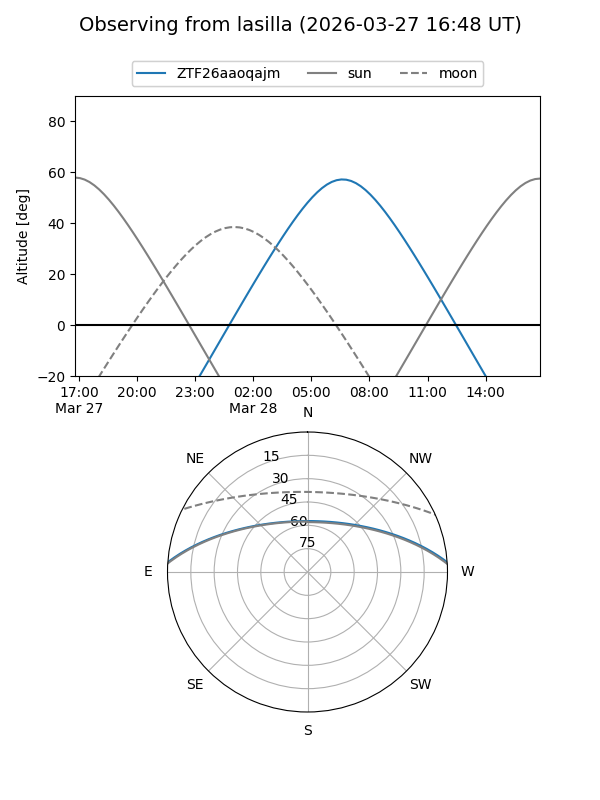
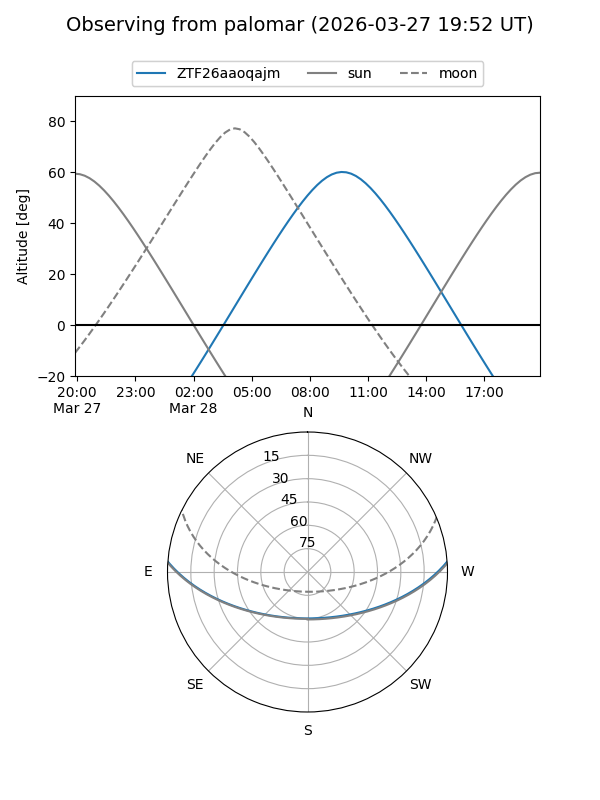

ZTF26aaoqajm
Target ZTF26aaoqajm at 2026-03-28 10:23
Aliases and brokers:
FINK: link
Lasair: link
ALeRCE: link
alt names
ZTF26aaoqajm (ztf,fink_ztf)
Coordinates:
equatorial (ra, dec) = 213.8319,+3.63841
equatorial (HMS+DMS) = 14:15:19.66,+03:38:18.28
galactic (l, b) = (347.0443,+59.12516)
Flags:
Photometry:
last ztfr=19.66
1 ztfr detections
Lightcurve

Visibility


Additional plots